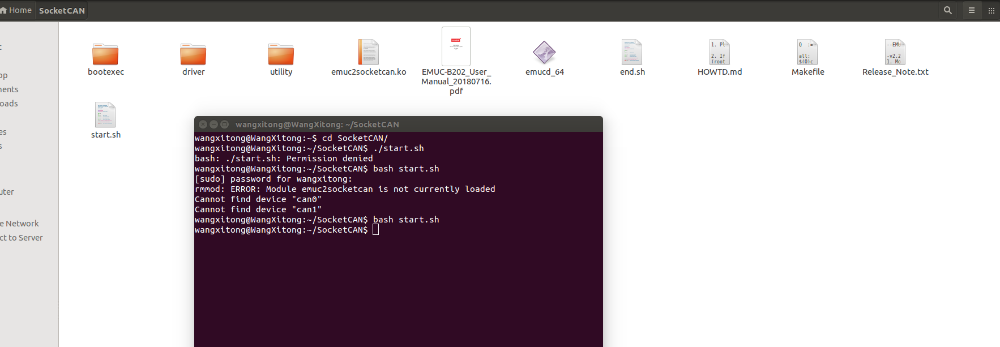

循迹搭建–Apollo系统重装¶
概览¶
本手册旨在帮助用户在开发套件上重新安装Ubuntu操作系统、配置软件，并启动使用Apollo自动驾驶平台。
工控机系统安装¶
在本小结需要完成工控机的软件安装，包括Ubuntu Linux安装、Apollo软件系统安装等。
工控机软件系统安装¶
 在本小结中，工控机软件系统安装包括计算机操作系统的安装，硬件驱动的安装，应用软件的安装和Apollo软件系统的安装。
在本小结中，工控机软件系统安装包括计算机操作系统的安装，硬件驱动的安装，应用软件的安装和Apollo软件系统的安装。
安装Linux系统¶
Apollo软件系统依赖于Linux操作系统而运行，而Linux操作系统种类繁多，且又分为服务器版本和桌面版本，这里我们选择当下比较流行的Ubuntu桌面操作系统的64位版本。安装Ubuntu Linux的操作系统的步骤如下：
创建引导盘¶
创建一个可以引导启动的Ubuntu Linux USB闪存驱动器，下载Ubuntu，并按照在线说明创建可引导启动的USB闪存驱动器。
 推荐使用 Ubuntu 18.04.5.
推荐使用 Ubuntu 18.04.5.
 开机按F2进入BIOS设置菜单，建议禁用BIOS中的快速启动和静默启动，以便捕捉引导启动过程中的问题。建议您在BIOS中禁用“快速启动”和“静默启动”，以便了解启动过程中遇到的问题。
开机按F2进入BIOS设置菜单，建议禁用BIOS中的快速启动和静默启动，以便捕捉引导启动过程中的问题。建议您在BIOS中禁用“快速启动”和“静默启动”，以便了解启动过程中遇到的问题。
获取更多Ubuntu信息，可访问:
 Ubuntu桌面站点:
Ubuntu桌面站点:
安装Ubuntu¶
a.将Ubuntu安装驱动器插入USB端口并启动IPC。
b.按照屏幕上的说明安装Linux。
执行软件更新与安装¶
 WARNING：在整个Apollo系统的安装和操作的过程中，全程禁用root账户，皆用普通账户进行操作，切记！
WARNING：在整个Apollo系统的安装和操作的过程中，全程禁用root账户，皆用普通账户进行操作，切记！
a.安装完成，重启进入Linux，请选用默认的内核进入系统即可。
b.在终端执行以下命令完成最新软件包的更新：
sudo apt update && sudo apt upgrade
 IPC必须接入网络以便更新与安装软件，所以请确认网线插入并连接，如果连接网络没有使用动态分配（DHCP），需要更改网络配置。
IPC必须接入网络以便更新与安装软件，所以请确认网线插入并连接，如果连接网络没有使用动态分配（DHCP），需要更改网络配置。
安装GCC和G++¶
请执行以下命令安装7.5.0版本的gcc和g++，命令如下：
sudo apt install gcc g++ -y
安装完成后，用以下命令检查gcc和g++的版本是否为7.5.0以确认安装成功；若安装未成功，请重新安装直到成功为止：
gcc --version
g++ --version
安装Apollo内核¶
开发套件上运行Apollo需要Apollo Kernel，请按照如下步骤下载、安装预编译的内核：
a.从linux-kernel-5.4.115-apollo-rt下载发布的Apollo Kernel的预编译的安装包linux-kernel-5.4.115-apollo-rt.zip压缩文件。
b.安装包下载完成后，解压后安装:
unzip linux-kernel-5.4.115-apollo-rt.zip
cd linux-kernel-5.4.115-apollo-rt
sudo dpkg -i ../*.deb
c.安装完成后，使用reboot命令重新启动计算机。进入系统后，在终端中输入uname -r，若输出“5.4.115-apollo-rt”字样，则表示此时系统是以apollo-kernel引导的。 注意：从此以后，每次开机都需要以apollo-kernel来引导系统。
安装GPU驱动¶
客户自己重新安装系统，请先安装驱动，然后再检查驱动以确认驱动已装好。
安装驱动¶
下载apollo-kernel官网上的脚本install-nvidia.sh至当前用户的home目录下，输入以下命令完成显卡驱动内核模块的安装：
cd ~
sudo apt install make
sudo bash install-nvidia.sh
完成显卡驱动内核模块的安装后，在当前用户的home目录下会出现一个名为NVIDIA-Linux-x86_64-460.32.03.run的文件，执行以下命令完成显卡驱动用户库的安装：
cd ~
sudo bash ./NVIDIA-Linux-x86_64-460.32.03.run --no-x-check -a -s --no-kernel-module
完成显卡驱动用户库的安装后，重新启动工控机。
检查驱动¶
在终端中输入以下命令来检查显卡驱动内核模块是否安装成功：
cat /proc/driver/nvidia/version
若输出的内容中包含”460.32.03”字样，则表示显卡驱动内核模块安装成功；若不是，请重新安装显卡驱动内核模块。
在终端中输入nvidia-smi，能看到显卡的信息且最下面没有出现No running processes found的相关字样，输入nvidia-settings能调出显卡的配置界面，则表示显卡驱动安装成功。
安装Can驱动¶
若是蓝色的8108的IPC，请先安装EmucCan驱动然后再检查EmucCan驱动。
安装EmucCan驱动¶
在Nuvo-8108GC中，系统搭配的是EmucCan卡，其驱动安装步骤如下所示：
a.安装EmucCan并添加rules文件
在系统/etc/udev/rules.d/目录下执行sudo touch 99-kernel-rename-emuc.rules命令新建一个文件99-kernel-rename-emuc.rules,执行sudo vim 99-kernel-rename-emuc.rules命令添加文件内容：
ACTION==“add”,SUBSYSTEM==“tty”,MODE==“0777”,KERNELS==“1-11:1.0”,SYMLINK+=“ttyACM10”
然后先按ESC键然后再按:wq保存文件内容退出，并重启系统。重启系统后执行cd /dev命令，用ls -l ttyACM*命令查看设备，要确保ttyACM10存在。
b.下载emuc-B202驱动包
下载地址emuc-B202 Driver
将EMUC-B202文件下的Linux下的驱动安装包解压出来放到当前用户的home目录下并将文件夹重命名为SocketCAN，将当前目录设置到这个文件夹下，并执行make命令：
cd SocketCAN/
make
生成的文件如下图所示 ：

c.启动can卡
将start.sh中的第四行的内容dev_name=ttyACM0修改为dev_name=ttyACM10后保存文件。在当前目录下执行bash start.sh命令，如下图所示：

检查EmucCan驱动¶
a.测试can卡发送接收
在终端中输入以下命令安装can的测试工具：sudo apt install can-utils -y，然后执行命令cansend can0 1FF#1122334455667788，在另开一个终端执行以下命令：
candump can0
循环发送cansend命令，能够在candump中收到发送的数据，如下图所示 ：
 则表示Can驱动安装成功。
则表示Can驱动安装成功。
b.注意事项
在后续启动apollo的canbus模块时，需要先在docker外运行start.sh脚本。
安装docker软件¶
重新安装操作系统的客户请先安装docker，然后再检查docker。
安装docker¶
使用apollo官网上的install_docker.sh来安装docker。工控机在联网情况下在终端中输入以下命令来完成安装：
sudo apt update
sudo apt install curl
sudo bash install_docker.sh
检查docker¶
在终端中输入以下命令来验证docker是否安装成功：
sudo docker run hello-world
若能看到helloworld的相关信息，则表示docker安装成功。
 WARNING：在以下模块的操作中，如非本文档或操作系统要求，禁用一切
WARNING：在以下模块的操作中，如非本文档或操作系统要求，禁用一切sudo操作，切记！
下载Apollo源代码¶
a、请参考以下操作来下载Apollo源代码：
cd ~
sudo apt update
sudo apt install git -y
git init
git clone -b r5.5.0 https://gitee.com/ApolloAuto/apollo.git
代码下载的时间视网速的快慢而有所区别，请耐心等待；下载完成后的代码在~/apollo目录下，若您需要和Apollo代码保持完全同步，请接着执行以下命令：
git remote set-url origin https://github.com/ApolloAuto/apollo.git
git pull
设置Apollo编译环境¶
a.设置环境变量，在终端输入以下命令：
cd ~
echo "export APOLLO_HOME=$(pwd)" >> ~/.bashrc
source ~/.bashrc
b.将当前账户加入docker账户组中并赋予其相应权限，在终端输入以下命令：
sudo gpasswd -a $USER docker
sudo usermod -aG docker $USER
sudo chmod 777 /var/run/docker.sock
命令执行完成后，重新启动一下计算机。
编译Apollo源代码¶
a.启动并进入docker容器，在终端输入以下命令：
cd ~/apollo
bash docker/scripts/dev_start.sh
第一次进入docker时或者image镜像有更新时会自动下载apollo所需的image镜像文件，下载镜像文件的过程会很长，请耐心等待。这个过程完成后，请输入以下命令以进入docker环境中：
bash docker/scripts/dev_into.sh
b.编译apollo，在终端输入以下命令，等待编译完成，整个编译过程大约耗时38分钟：
bash apollo.sh build_opt_gpu
运行DreamView¶
a.若您已经在docker环境中，请忽略此步骤，否则请执行以下命令进入docker环境：
cd ~/apollo
bash docker/scripts/dev_start.sh
bash docker/scripts/dev_into.sh
b.启动apollo 在终端输入以下命令：
bash scripts/bootstrap.sh
如果启动成功，在终端会输出以下信息：
nohup: appending output to 'nohup.out'
Launched module monitor.
nohup: appending output to 'nohup.out'
Launched module dreamview.
Dreamview is running at http://localhost:8888
在浏览器中输入以下地址：
http://localhost:8888
可以访问DreamView。
c.回放数据包 在终端输入以下命令下载数据包：
python3 docs/demo_guide/record_helper.py demo_3.5.record
输入以下命令可以回放数据包，在浏览器DreamView中应该可以看到回放画面。
cyber_recorder play -l -f demo_3.5.record
如果成功在浏览器中看到回放画面，则表明您的apollo系统已经部署成功！
NEXT¶
现在，您已经完成Apollo系统安装，接下来可以开始循迹搭建–车辆集成
常见问题¶
a.显卡的驱动没有安装或者没有安装成功
请参考显卡的驱动安装的部分重新安装，注意需要在apollo内核中安装GPU的驱动并且安装后需要重新启动计算机。
b.docker进不去, no matching entries in passwd file
安装好ubuntu Linux，apollo-kernel，docker后，执行
bash docker/scripts/dev_start.sh
bash docker/scripts/dev_into.sh
遇到报错如下： unable to find user xxx : no matching entries in passwd file. 主要是由于用户权限没有加进docker去导致。执行如下两行命令：
sudo gpasswd -a $USER docker
sudo usermod -aG docker $USER
其中$USER是登陆用户名，执行成功后logout，然后重新登陆ubuntu。
如果没有解决，那么有可能是/apollo/scripts/docker_adduser.sh没有权限，需要sudo chmod a+rx /apollo/scripts/docker_adduser.sh增加权限。（ 我们曾遇到一种情况就是/apollo/scripts/目录下有一个docker_adduser.sh~文件，导致报错，所以需要检查是否存在副本文件或者交换文件之类的，需要删除掉 ）。
如果还是不行，可以试试sudo chmod 777 /var/run/docker.sock docker/scripts。
c.编译的时候CAN警告
这个CAN警告是ESD-CAN卡的编译警告，开发套件小车使用的是EMUC-CAN卡，请直接忽略这个警告。
d.apollo代码没有git remote -v、git branch -a和git log等相关的git信息。
造成以上问题的原因是用户错误地使用了git init等相关的命令而导致的apollo代码的git信息丢失。依次输入以下命令即可恢复apollo代码的git信息，切记在操作之前备份自己的apollo代码。
cd ~/apollo
git init
git remote add origin https://gitee.com/ApolloAuto/apollo.git
git clean -fd
git pull origin master
git pull
git checkout -b r5.5.0 origin/r5.5.0
git branch -D master